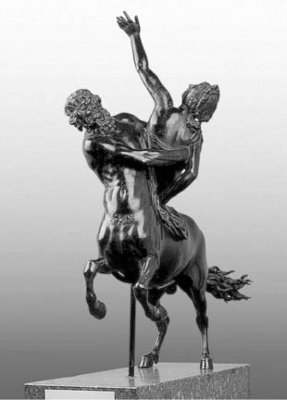

Bu yolculuğu sırasında çok sevdiği karısı Deyaneyra (Deianeira) ve çocukları da vardı yanında... Bir ara önlerine çıkan bir ırmak, eriyen karlar yüzünden yükselip kabarmış, kimselere geçit vermez olmuştu... Belden aşağısı at gövdeli olan Nessos adlı bir Kentaur da, gelip giden yolcuları sırtına alıp karşıya geçiriyordu... Herakles, dilimizde Atadam da denen bu Kentaur'la anlaştı: Çocuklarını sırtına alıp kendisi geçirecekti ırmaktan. Karısı Deyaneyra'yı da Kentaur Nessos...
Bu anlaşma uyarınca Nessos, Deyaneyra'yı sırtına alıp nehire daldı ve karşı tarafa doğru götürmeye başladı... Herakles'in bir zamanlar hemcinslerine yaptıklarının öcünü almak üzere Kentaur Nessos, bunu bir fırsat olarak değerlendirmek istedi. Bu yüzden sırtına aldığı kadıncağızı nehir aşağı koştura koştura kaçırmaya başladı!.. Daha sonra ormana doğru sürükleyip götürürken Herakles de onu, o ünlü zehirli okuyla vurdu. Anında yerlere serilen Nessos, öleceğini anlayınca, Herakles'ten eski öcünü almak üzere; "Şimdi benim kanımdan biraz al. Kocan Herakles bir gün seni aldatmak isterse, bu büyülü kanımdan birazını onun gömleğine bulaştırıp giydirirsin. Artık gözü senden başkasını görmez olur!" dedi kadına.
Gün olur belki işe yarar kabilinden kadıncağız, ölen adamın büyülü olduğunu söylediği, ama aslında çok yakıcı ve öldürücü olan kanından birazını aldı...
Herakles, karısı Deyaneyra'yı ve çocuklarını azgın ırmaktan geçirdikten sonra aynı gün hep birlikte Trahis kentine ulaştılar. Birkaç gün orada dinlendiler. Sonra da Herakles, çoluk çocuğunu bir süreliğine bir tanıdığının yanında bıraktı. Kendisini yıllarca köle olarak kullanan ve verdiği sözleri tutmayan kral Evristeus'tan tek başına öcünü almak üzere yollara düştü... Evristeus'u bulur bulmaz da onu hemen öldürdü ve kızı güzel İole'yi de kendi oğlu Hilos'la (Hylos) evlendirmek üzere, bir arkadaşının eşliğinde onu karısı Deyaneyra'nın yanına gönderdi...
Yaşadığı bu son olaydan sonra, insanın insanca yaşamasının ve evrensel adaletin önündeki tek engelin, kölelik olduğunun iyice bilincine vardı...
Ne var ki tanrıça Hera, Herakles'in bu yollu düşüncelerini tanrısal sezgisiyle anında öğrendi. Eski öfkesini unutmayan tanrıça, hemen kılık değiştirip Herakles'in karısı Deyaneyra'nın düşüne girdi ve ona, kocası Herakles'in kendisine kuma olarak kral Evristeus'un güzel kızı İole'yi göndereceğini söyledi!
Böylece kıskançlık bunalımına giren Deyaneyra'nın aklına, Atadam Nessos'un büyülü kanı geldi hemen! Kendini bir başkasıyla bölüşecek olan kocası Herakles'i büyüleyip yeniden kendisine döndürmek için, onun en beğendiği gömleğin üstüne bu büyülü kanın birazını serpiştirdi. Sonra da gömleği oğlu Hilos'la kocası Herakles'e gönderdi...
Herakles karısının gönderdiği bu güzel gömleği öpüp öpüp kokladı; sonra da büyük bir sevinçle hemen giydi! Giyer giymez de büyük bir yanma başladı bedeninde! Artık durduğu yerde duramıyordu... Sırtından çıkarıp atmak istediyse de yapamadı; etiyle kaynaşmıştı gömlek! Deliye dönen Herakles, önüne çıkan ilk dağın tepelerine doğru can havliyle tırmanmaya başladı. Bir yandan da yolu üstündeki her ağacı köklüyor, onları üst üste yığıyordu. Öte yandan Zeus'tan kaynaklandığını düşündüğü böylesi bir cezanın nedenini anlamaya çalışıyordu. Bir ara gözyaşları içindeki oğlu Hilos'a, anasının neden böyle kendisine öldürücü gömlek gönderdiğini sordu. Hilos da onu İole'den soğutmak için gömleğe Atadam'ın büyülü kanından sürdüğünü söyledi! Durumu öğrenen ve acıdan zorlukla soluk alıp veren Herakles için artık çok geçti! Ama oğlundan iki dileğini yerine getirmesini istedi hemen. İlk dileği, topraktan kökleyip kökleyip üst üste koyduğu ve biraz sonra üstüne çıkacağı ağaç yığınını ateşlemesiydi. İkinci dileği de eve döndüğünde güzel İole ile evlenmesiydi...
Herakles'in yakışıklı oğlu Hilos, yığını ateşe vermeden doğruca anasının yanına gitti son hızla. Her şeyi anlattı ona ağlaya ağlaya ... Olup bitenleri öğrenince çılgına dönen Deyaneyra ve yakınları da, apar topar dağa geldiler. Deyaneyra, çok sevdiği kocası Herakles'e giydirdiği gömlek yüzünden onun çektiği acıları görünce çok üzüldü ve hemen orada kendini hançerledi. Deyaneyra'nın akan kanından oluşan ağaçlar, Herakles'in köklediği ağaçların yerlerini aldı. Gömleği içinde cehennemdeymişçesine yanan Herakles de, tepesinde durduğu bu ağaç harmanını ateşlemelerini söyledi bağıra bağıra...

Atadam, Herakles'in karısını kaçırırken
Bir süre sonra ağaç yığınlarının dibinden dumanlar yükselmeye başladı. Sonra da dipten tutuşan bu ağaç yığınını alevler yutarken Herakles, aşağıdaki yakınlarının çok zor duyup anladığı bir şeyler haykırmaya başladı... Tek tek yok etmekle canavarların tükenmeyeceğini, üstelik bu canavarların bütün çağlar boyunca çok daha ürkünç dönüşümler geçirerekten durmadan çoğaldıklarını anlatmaya çalışıyordu... O yüzden insanın, diğer insan kardeşleriyle birlikte, canavarlara dönüşmüş bütün kötülük kaynaklarını kökünden kurutması gerekiyordu. İnsan, kişisel kurtuluşuna o zaman ulaşabilirdi ancak...
İşte insan dostu Herakles, aşağıdakilere canhıraş bu düşüncelerini bağıra bağıra ulaştırmaya çalışırken, gökyüzünden gelen çok gürültülü bir kasırga patlaması yayıldı yeryüzüne ve güneş aniden tutuldu! Dört atın son hızla çektiği bulutlarla örtülü bir araba, alevler içindeki Herakles'i kaptığı gibi, anında gökyüzünün yedinci katına ağdırdı ve doğruca Olimpos'taki babası Baştanrı Zeus'un sarayına ulaştırdı...
Bulutlar sarmalındaki arabadan inen Herakles yorgundu; ama dünyayı tanımış olmaktan ve orada belki bir gün anlaşılacak bir ileti bırakmış olmaktan çok mutluydu...
Onun geldiğini duyan bütün Olimposlu tanrı ve tanrıçalar hemen çevresine doluştular; çeşitli armağanlar sundular.
Bu arada her şeyi unutmuş gibi görünen tanrıça Hera da, evlendirmek üzere onu kızı güzel tanrıça Hebe'yle tanıştırdı...